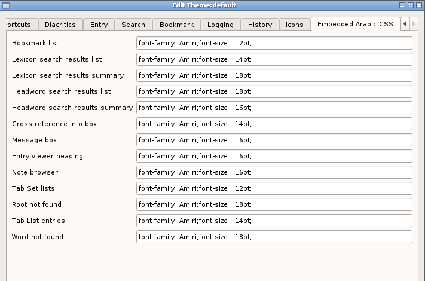

As described here the styling information, e.g. font information, is set using CSS stylesheets. However for technical reasons this is not always possible and the styling information has to be applied by other means.
The options presented here will be embedded within the "style" attribute of an HTML fragment and should be edited accordingly.
These settings can also be changed using the Font Dialog (see here).
All of the options relate only to Arabic text and many of them occur in the context ofo information presented in tabular format.

Bookmark list
The Arabic text in the bookmark list dialog (Main menu -> Bookmarks -> List)
Lexicon search results list
The Arabic text in the Root, Entry and Context columns the Arabic word search list (Main menu -> Search -> Arabic word).
Lexicon search results summary
The Arabic text in the search summary text.
Headword search result list
The root, headword and entry columns in the Head Word search results table (Main menu -> Search -> Head word).
Headword search results summary
The Arabic text in the search summary text.
Cross reference info
The Arabic text in information dialog that appears when fixing a broken link as shown here.
Entry viewer heading
The Root/Entry text when viewing an entry (as shown here).
Note browser
Any Arabic text that appears in the list of notes (as show here
Tab Set lists
The Arabic text shown in the list of current tabs (as here.
Root not found
The message box that appears when a searched for root is not found.
Word not found
The message box that appears when a searched for headword is not found.
Tab List entries
The Arabic columns in the list of tabs shown when viewing a tabset (as here.
Message box
Any general popup message box that contains Arabic text.